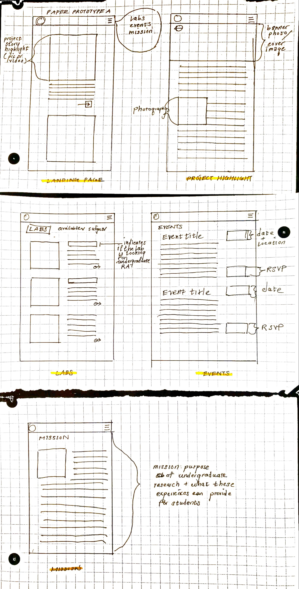
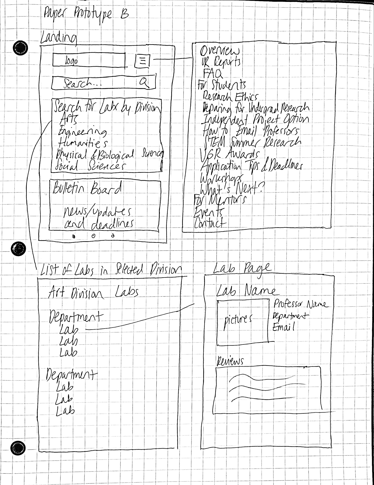

UCSC Undergraduate Research Opportunities
Intro
The Undergraduate Research Opportunities website is offered to UCSC undergraduate students as a resource for them to explore research labs that are open for them to join and get information--such as scholarships, preparing to join a lab, and emailing professors. Although it is an extremely helpful resource in theory, the execution of the website is horrendous and there has not been changes made to the website in several years. Many people complain that the interface is not only hideous and bland, but also too cluttered to use efficiently. I have worked in a group of five to redesign the mobile website interface.
Needfinding
We ran 8 needfinding interviews and 8 user evaluations on UCSC students who has been in undergraduate research labs. Based off answers from the 8 needfinding interviews we conducted, we concluded the following user stories:
- As an undergraduate student interested in research, I want to easily access information about current positions so that I can find projects that interest me.
- As an undergraduate student interested in research, I want to easily communicate with TAs and professors so that I can more efficiently complete the research process.
- As an undergraduate student who is somewhat interested in research, I want a compelling reason to participate, so that I can make the final decision to go into research.
- As an undergraduate student who plans on applying to grad school, I want to complete tasks that are directly related to what I will be pursuing for my master’s or PHD so that I can be prepared for graduate school.
- As an undergraduate student, I want help deciding upon my area of interest so that I can find work that I enjoy.
Concluding based off our user stories and other information from our needfinding interviews, we came up with design goals entailing that:
- Students want a website that emphasizes the projects over everything else. On the website, they are overloaded with too much information interrupts them from finding the information that they really want in an efficient way.
- Rather than the website itself, undergraduates who are interested in research frequently find out about opportunities through word of mouth (mainly from professors).
- There are undergraduates who have partaken in research and recommend that others do not take up research. This busts the assumption that undergraduates enjoyed research.
- Undergraduates also like to participate in research unrelated to their major. We did not expect for undergraduates to purposefully choose projects unrelated to their majors.
- Students who are interested in research are not set on going to grad school. They are still “on the fence” and trying to decide what it is that they want to pursue academically.
User Evaluations and Heuristics Analysis
Ivy and I created two different paper prototypes: prototype A and prototype B. We then conducted A/B testing and WoZ testing with the paper prototypes. We asked 8 different interviewees to perform the following tasks:
- Find what labs have current openings for undergraduate research assistants.
- Find more information about research in your major or other majors you are interested in.
- Find contact information for grad students and professors in a research lab.
Based off the responses from the A/B testing and WoZ testing, we learned that:
- Users use the search bar frequently to find information when they don’t know what tab to go to.
- Occasionally, users struggled with finding contact info for labs likely because it’s deeper into the list of labs.
- Users did not have an easy way out if they got stuck or were confused. There needs to be an FAQ.
We also ran heuristics analysis on the currently deployed UCSC undergraduate research studies website to pinpoint all of its usability flaws. We found that:
- The website should have a simplified structure and redundant links should be removed and there should be minimizing and maximizing tabs.
- The system should give the user feedback when keywords are inputted and there should be a page with descriptions for next steps for searches.
Wireframes

Prototype A by Ivy

Prototype B by me
High Fidelity Prototype
Based on the facts that users made less errors on my wireframe and rated my wireframe more favorably, we decided to design the high fidelity prototype based off my sketch over Ivy's.
View the high fidelity prototype in Adobe XD